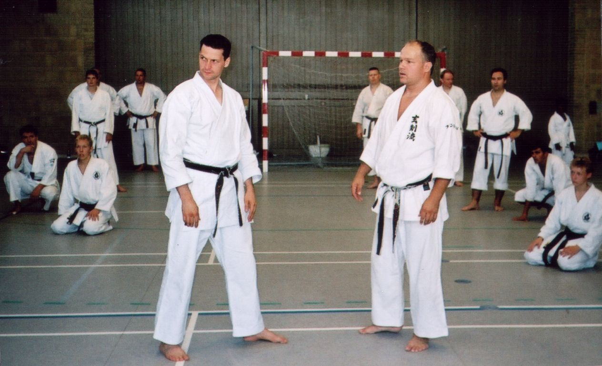
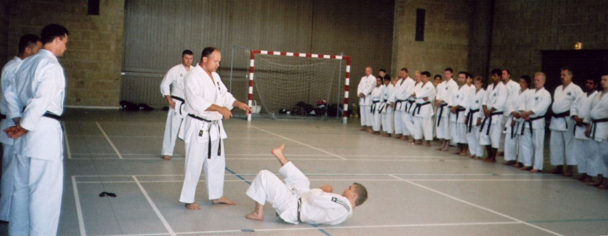
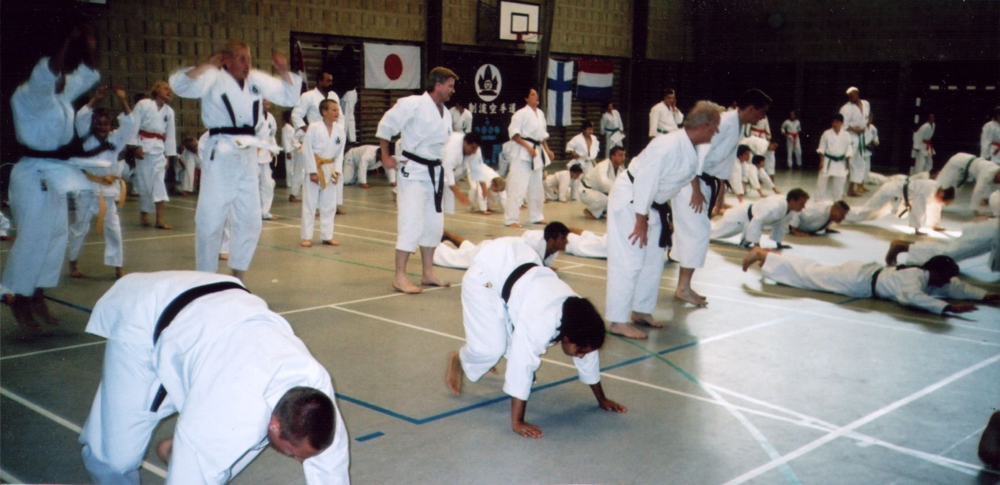
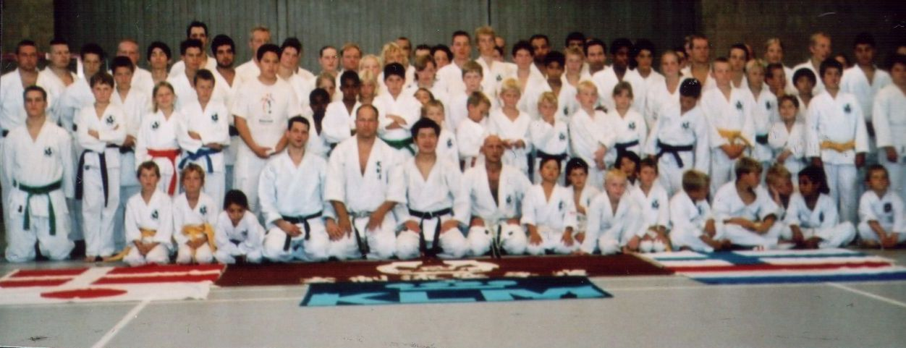

Picture Gallery 4
Genseiryu Karate - International pictures (2)
Please HELP ME: For the correct description of the pictures I am depending on other people who were present at the event or who recognize any of the persons in the pictures.
If you see any mistake in the description or if you have more information or more pictures, please don't hesitate to contact me!
Thanks to sensei Nobuaki Konno and sensei David Roovers for the correct information!
Click on the picture to enlarge to original size! Use the "back arrow" of your browser to return.
| 4-1.
Genseiryu Summer Camp 2005, Denmark. On the right sensei
Jan Laitiainen from Finland and on the left sensei David Roovers from
the Netherlands. |
 |
| 4-2.
Genseiryu Summer Camp 2005, Denmark. Sensei Jan Laitiainen
is explaining about his ground techniques. |
 |
| 4-3.
Genseiryu Summer Camp 2005, Denmark. Condition training |
 |
| 4-4.
Genseiryu Summer Camp 2005, Denmark. Genseiryu Denmark, Finland
and Sweden together with Genseiryu Netherlands (Genseikan/KLM Karateclub) |
 |
{kind=link}
{kind=link}
{kind=link}
{kind=link}
{kind=link}
|
4-5. A SAMPLE of the original Genseiryu Dan Certificate as signed by sensei Seiken Shukumine (the signature has been removed for publication purposes, to prevent fraud). The Genseiryu headquarter (Honbu) in Ito, Japan is now considering to give this certificate to karateka who are practicing Genseiryu karate according to the book of sensei Shukumine, "Shin Karatedo Kyohan". At this moment, some Genseiryu Representative Black belts from Denmark, Finland, France, Netherlands and Spain have the official Genseiryu Certificate. |
 |